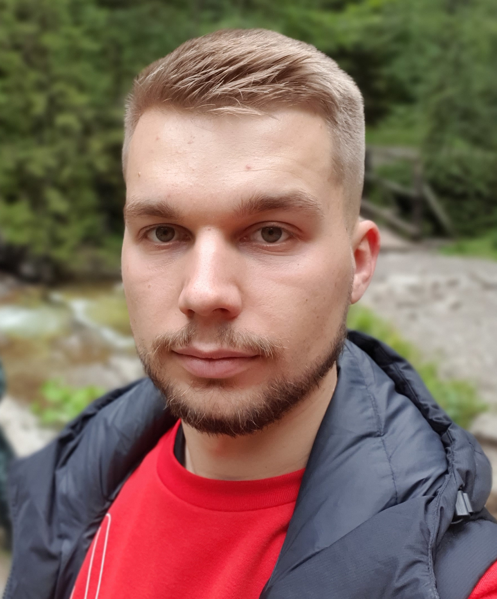

Krótko o mnie...
Nazywam się Dawid Kłos, mam 24 lata i mieszkam w Wielkiej Brytanii
Właśnie zacząłem naukę z WTF: Co ten Frontend i zamierzam się świetnie
przy tym bawić. W tym roku zaczynam studia informatyczne, więc trochę
wiedzy przed tym bardzo mi pomoże. :)
Nauka Frontendu:
Tydzień I
W pierwszym tygodniu nasz nauczyciel wprowadził nas w struktury tego
kursu. Dowiedzieliśmy się, czym jest Frontend i czego musimy się
nauczyć, żeby nazwać się Frontdeveloperem. :) Zainstalowaliśmy i
zapoznaliśmy się również z narzędziami czyli programami, których
będziemy używać. Droga nie jest krótka, wiedzy do nauki też nie
mało, ale kto powiedział, że będzie łatwo?
Tydzień II
W tym tygodniu nauczyliśmy się podstaw HTML i CSS. Napisaliśmy już
troche kodu i dostaliśmy właśnie to zadanie domowe. W tym tygodniu
dowiedziałem, się również, że dostałem się na studia informatyczne i
to w szkole, która była moim pierwszym wyborem. Pierwsze 2 tygodnie
kursu przyswoiłem błyskawicznie,ale to dlatege, że znałem już HTML i
trochę CSS. Z niecierpliwością patrzę w przyszłość... :)
Tydzień III
W tygodniu trzecim poznaliśmy technikę do organizacji pracy kiedy
mamy więcej niż jedno lub dwa zadania i musimy o wszystkim pamiętać.
Nazywa się Kanban i wywodzi z Japonii. Uproszczając tworzymy sobie
tabelę którą dzielimy na 3 pola: do zrobienia, w trakcie robienia i
skończone. Zalecane jest mieć tylko jedno zadanie w sekcji w trakcie
robienia. Dzięki tej metodzie będziemy na pewno lepiej
zoorganizowani. Poznajemy również nowe znaczniki HTML jak np. br,
em, strong, b itd. A także zaczynamy naukę nowego języka, którym
jest JavaSctript (JS).
Tydzień IV
W tygodniu trzecim poznaliśmy technikę do organizacji pracy kiedy
mamy więcej niż jedno lub dwa zadania i musimy o wszystkim pamiętać.
Nazywa się Kanban i wywodzi z Japonii. Uproszczając tworzymy sobie
tabelę którą dzielimy na 3 pola: do zrobienia, w trakcie robienia i
skończone. Zalecane jest mieć tylko jedno zadanie w sekcji w trakcie
robienia. Dzięki tej metodzie będziemy na pewno lepiej
zoorganizowani. Poznajemy również nowe znaczniki HTML jak np. br,
em, strong, b itd. A także zaczynamy naukę nowego języka, którym
jest JavaSctript (JS).